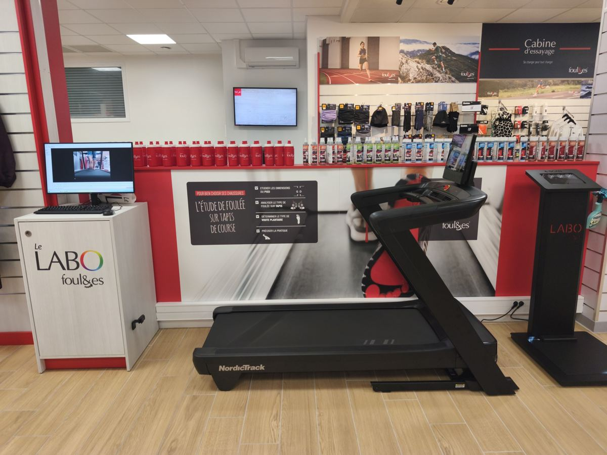
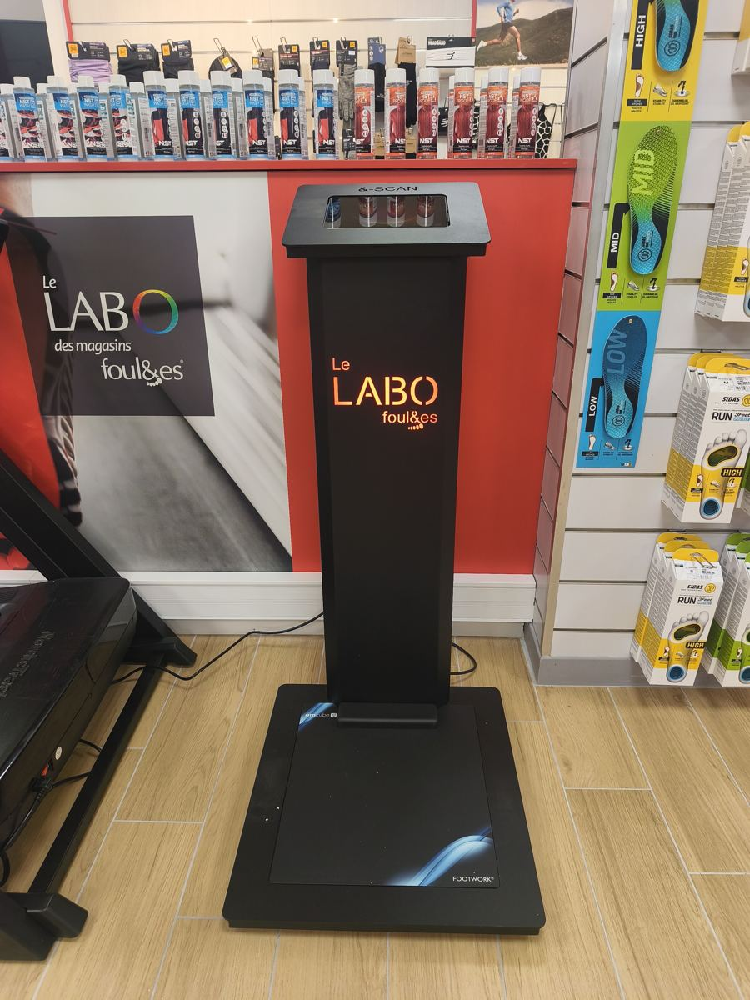
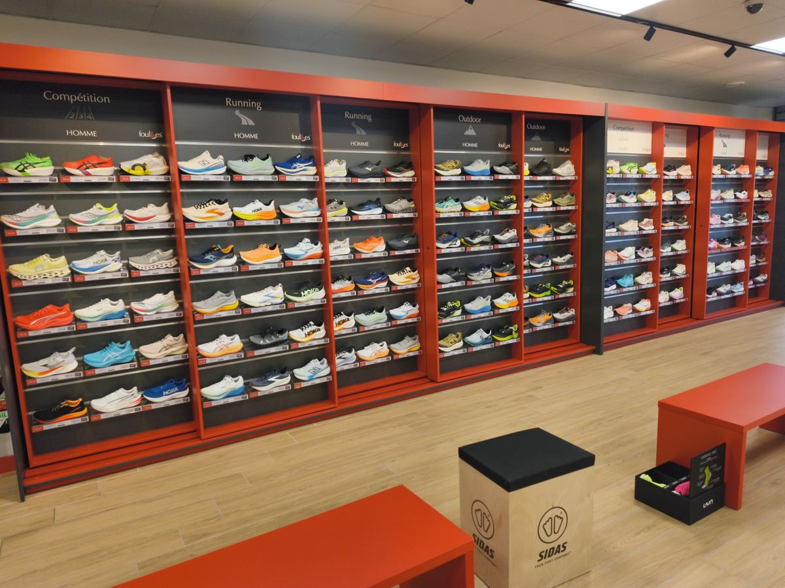

Chez Foulées Quincy-sous-Sénart, l'analyse de foulée se fait sur tapis. Elle est offerte avec l'achat d'une paire de chaussures ; sinon elle coûte 20 €, déduits de votre prochaine paire.

À quoi sert l'analyse de foulée ?
Deux coureurs qui chaussent la même pointure n'ont pas forcément besoin de la même chaussure. La façon dont le pied se pose, roule et repart, la régularité de la foulée et le terrain sur lequel on court changent tout.
L'analyse sert à observer tout cela pour vous orienter vers des modèles adaptés à votre pied, à votre niveau et à votre pratique : route, trail ou les deux. Elle ne remplace pas un avis médical : en cas de douleur qui dure, voyez un professionnel de santé.
Comment ça se passe ?
L'analyse se fait au Labo, le coin du magasin réservé à l'étude de la foulée. Elle suit les 4 étapes affichées au mur :
- Étudier les dimensions du pied : longueur et largeur des deux pieds, car ils ne sont pas toujours identiques.
- Déterminer le type de voûte plantaire : vous montez pieds nus sur le scanner, qui montre comment le poids se répartit sous le pied.
- Analyser le type de foulée sur tapis : vous courez quelques minutes sur le tapis, à votre allure, pendant qu'on observe la pose du pied, filmée à l'écran.
- Préciser la pratique : route, chemins ou trail, distances, fréquence, objectif, et les éventuelles gênes.

À partir de là, on vous propose plusieurs modèles parmi plus de 50 marques, dont Hoka, Asics, Saucony, Brooks, On, Salomon et Garmin. Vous les essayez sur le tapis et en magasin, et vous comparez. Le but est que vous repartiez avec la chaussure dans laquelle vous vous sentez bien, pas avec la plus chère.
Ce qu'en disent les clients
Depuis l'ouverture, le 6 novembre 2026, l'analyse de foulée est ce que les clients citent le plus dans leurs avis Google. Quelques extraits :
« Le vendeur a analysé ma foulée et mon centre de gravité, puis a sélectionné 3 paires que j'ai toutes essayées pour trouver celle qui me va le mieux. Il a pris son temps, aucune pression. »
« Merci pour les tests réalisés sur tapis de course afin de déterminer les chaussures les mieux adaptées à ma foulée. »
« C'est un vrai plus d'avoir une analyse de la foulée et une proposition de chaussures adaptées. »
Retrouvez tous les avis sur la fiche Google du magasin.
Pour qui ?
Pour tous les niveaux : la première paire pour se mettre à courir, le changement de modèle, la préparation d'un trail ou d'une course sur route. On vous accueille et on vous conseille sans jargon, que vous débutiez ou que vous couriez depuis des années. Antoine, le gérant, est un enfant de Sénart et traileur depuis 15 ans.

Bien préparer votre venue
Venez avec la tenue dans laquelle vous courez, et si possible vos chaussures actuelles : leur usure renseigne aussi sur votre foulée. Prévoyez le temps d'essayer sans vous presser. Le programme de fidélité cagnotte 10 % de vos achats pour les suivants.
Questions fréquentes
Combien coûte l'analyse de foulée ?
Elle est offerte avec l'achat d'une paire de chaussures. Sans achat, elle coûte 20 €, déduits de votre prochaine paire.
Faut-il prendre rendez-vous ?
Non, le rendez-vous n'est pas obligatoire. Vous pouvez aussi appeler le magasin au 01 69 05 68 12.
Faut-il être un coureur confirmé ?
Non. L'analyse est utile dès la première paire, et c'est souvent là qu'elle aide le plus.
Que faut-il apporter ?
Votre tenue de course et, si possible, vos chaussures actuelles : leur usure aide aussi à vous conseiller.
Foulées Quincy-sous-Sénart
17 rue des Deux Communes, 91480 Quincy-sous-Sénart
Du lundi au samedi, 10h à 19h30, fermé les jours fériés, sauf le mercredi 11 novembre, ouvert de 10h à 18h
01 69 05 68 12 · 91quincy@foulees.com
Mis à jour le .
Mentions légales et confidentialité · Aucun cookie, aucun suivi